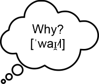

Quick Phonetics
About this page
Quick Phonetics is a website which makes researching phonetics easier. It provides a quick reference to all of the symbols in the International Phonetic Alphabet (IPA), and all of the language-neutral information about the symbol and its associated sound that one needs to pronounce the sound, or to implement it in an application's backend.
What is phonetics?
Phonetics is the study of the classification of
spoken sounds. A sound is classified based both on how its made
and what it sounds like, with the latter being more important.
Spoken sound is naturally infinitely variable, but a
phonetician's job is to simply the sounds into more broadly
applicable categories, and explain how a sound of that category
could be mimicked.
Phonology, a closely related field, studies how sounds are
used in a language, how languages represent them, and how
they change and affect each other.
Why Study the International Phonetic Alphabet?
Researching or describing the pronunciation of a language can often be difficult due to the challenge of describing one language's sounds in the perspective of the other, non-inclusive language. The IPA remedies this by providing a standard intermediate between languages. Being able to transcribe a language in IPA and be able to read it greatly simplifies the ability to convey and teach the sounds of a language. Many languages will have some source transcribing their words with IPA, or otherwise log which IPA sounds the language has and what each letter can represent. Thus, knowing the IPA is a very valuable skill in studying language. Below is an introductory video to the IPA for English speakers:
Why Should Studying Language Become Easier?
Our world is becoming increasingly globalized. Many people move to countries that do not share their native language, either for fun or for business. Because of this, the number of people who want or need to improve their pronunciation of a foreign language is only going up. Additionally, apps such as Duolingo have been popularizing studying language for fun or for a sense of accomplishment.
Features of Quick Phonetics
- Descriptive info about each IPA sound
- Tables to quickly navigate between the IPA symbols
- Audio for each IPA sound
- A converter that lets you turn ASCII into IPA
Planned Features of Quick Phonetics
- Descriptions and purposes of each non-sound IPA symbol
- Audio for each IPA sound
- Probably even more
Author information
- Name: Ethan Carlson
- Email: quickphonetics@gmail.com